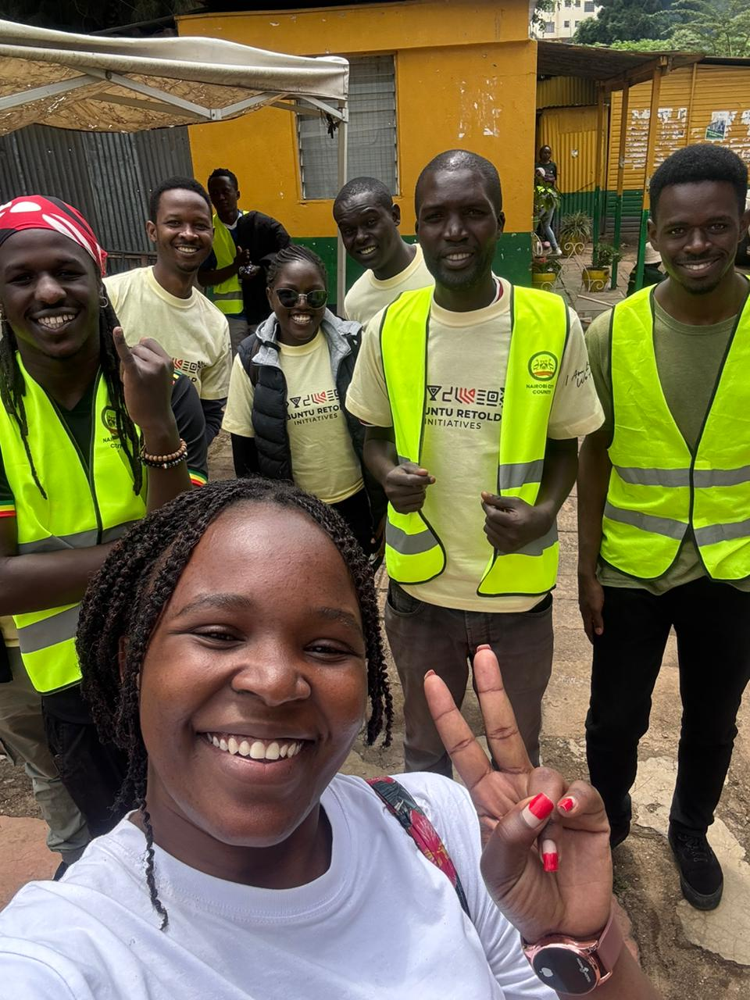
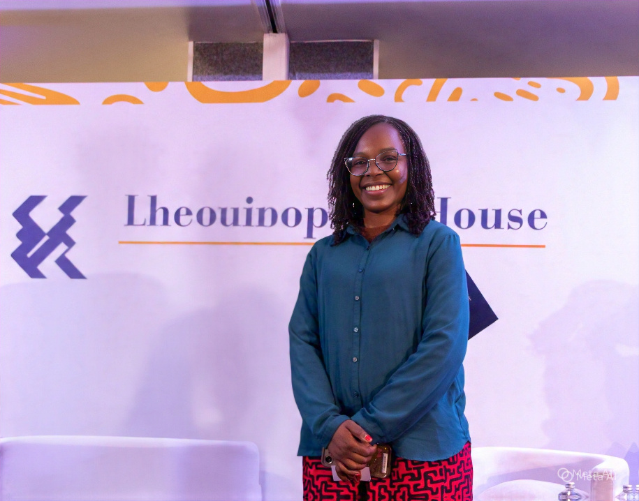

Learn about our story, mission, and the values that drive our work.
Ubuntu Retold Initiatives CBO was founded in Nairobi, Kenya, by a group of young visionaries committed to community transformation. Born out of a deep belief that African communities hold the solutions to their own challenges, the organization was established to create platforms where youth can lead, innovate, and drive sustainable change.
What started as a small group of passionate individuals has grown into a vibrant community-based organization that impacts hundreds of lives across multiple communities. Our journey is defined by a commitment to empowering young people, protecting the environment, and celebrating African heritage.
From community clean-ups to youth leadership summits, from tree planting campaigns to innovation workshops, every initiative we undertake is rooted in the belief that lasting change comes from within the community.

To empower young people, protect the environment, and promote African heritage through innovative, community-driven programs that create lasting positive change.
A thriving Africa where youth lead sustainable development, communities are resilient, and cultural heritage is celebrated and preserved.
The passionate individuals behind Ubuntu Retold Initiatives.

Visionary leader driving Ubuntu Retold's mission. Cyzel brings expertise in community development, social enterprise, and organizational strategy.
An advocate for environmental sustainability, Michael oversees program implementation and ensures our initiatives align with our mission and community needs.
Provides strategic direction and governance oversight, ensuring Ubuntu Retold stays true to its founding vision of community empowerment.
Derrick manages organizational communications and documentation, ensuring transparency and effective coordination across all programs.
The principles that guide everything we do.
Every initiative begins and ends with the community. We listen, learn, and co-create solutions.
Young people are not just beneficiaries — they are central to all our programs and decision-making.
We prioritize long-term impact over short-term gains in everything we do.
We embrace creative solutions to persistent community challenges.
We are open and accountable in all our operations and financial management.
We celebrate African identity, heritage, and the philosophy of Ubuntu.
Our governance framework ensures accountability, transparency, and community representation.
Decisions are made collectively with community input and stakeholder engagement.
Regular reporting and open financial records ensure trust and transparency.
Leadership transitions every 3 years to ensure fresh perspectives and prevent power concentration.
Our board reflects the diversity of the communities we serve.
We are grateful to work alongside organizations that believe in the power of community-driven change.
Want to partner with us? We welcome organizations, businesses, and institutions that share our commitment to community development.
Get in TouchBe part of the movement to empower communities across Africa.